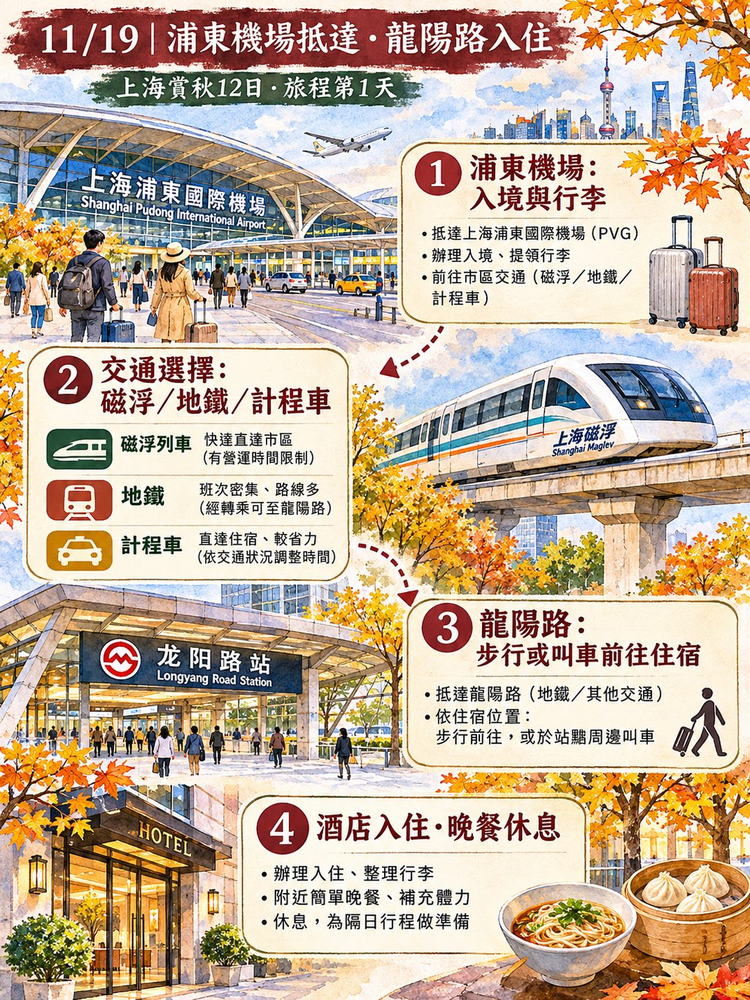

☕ 早餐｜就近用餐方案／尚未選定餐廳出發航班供餐／出發地早餐
順路理由：搭機出發日；不虛構抵達前上海早餐
推薦餐點與單價：推薦餐點：機上餐／早餐；單品售價待店家菜單確認
人均消費：人均消費：待確認，無可靠公開報價
營業時間：待確認航班
位置：依出發機場與航班

確認入境航廈、行李及護照／台胞證；先找到正式交通指示，不照網上假出口號碼走
磁浮從浦東機場至龍陽路，機場往龍陽路官方公布約 07:02–21:42；不在營運時間或帶大行李可改計程車；地鐵 2 號線為另一選項
以實際訂房地址導航，站外如果行李多直接選合法乘車點叫車，不自行猜附近同名飯店
入住後就近吃飯、補水、整理行李，不硬加其他景點。餐廳依當晚飯店實際位置選擇
抵達時間、航廈及飯店地址未寫在已核准資料中，因此不指定假接駁出口；晚到時不要依賴磁浮首末班之外的服務。
已核對交通營運資訊；實際班次及現場管制可能更新。官方或交通資料
抵達上海後先辦理入境、領行李及前往龍陽路住宿區。當天以入住、補給與休息為主，不安排需要趕時間的景點。
依實際抵達機場與航廈選交通；請以訂房確認單核對酒店地址，不要只靠同名搜尋結果。
今日路線：浦東機場 → 龍陽路住宿。不為用餐額外折返；「高德」開啟後請確認分店並按路線導航。
順路理由：搭機出發日；不虛構抵達前上海早餐
推薦餐點與單價：推薦餐點：機上餐／早餐；單品售價待店家菜單確認
人均消費：人均消費：待確認，無可靠公開報價
營業時間：待確認航班
位置：依出發機場與航班
順路理由：按實際抵達與入境時間；未確認到達時間
推薦餐點與單價：推薦餐點：麵食／簡餐；單品售價待店家菜單確認
人均消費：人均消費：待確認，無可靠公開報價
營業時間：依航廈現場
位置：上海浦東國際機場 航廈餐飲
地址：上海市浦東新區龍陽路2000號龍陽廣場F1。
營業時間：06:00–22:00（公開地圖參考，請當晚核對）；若入境晚或末班前趕不上則就近選店。
推薦餐點：滷肉飯、番茄牛肉麵、鮮肉小餛飩；單品售價依門市菜單。
人均消費：約 ¥20／人（攜程參考，非保證價格）。
順路：先入住龍陽路住宿，再在周邊吃；請核對飯店實際地址。
「待查」並不代表店家已確認營業。人民幣人均數字為第三方平台近期參考，非餐點定價；優惠、座位、正確分店與當日營業以商家及高德／美團即時資訊為準。未指名餐廳的欄位是備案，不能當成已核實店家。
⌂ 返回日期主選單